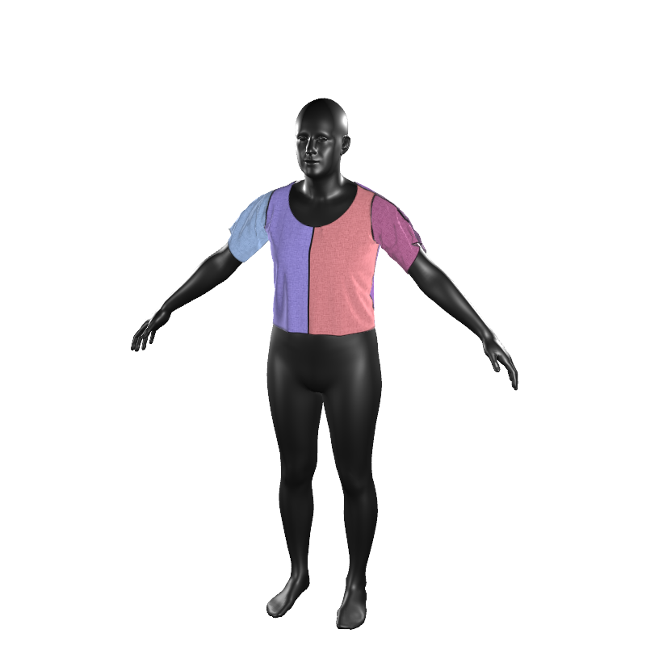
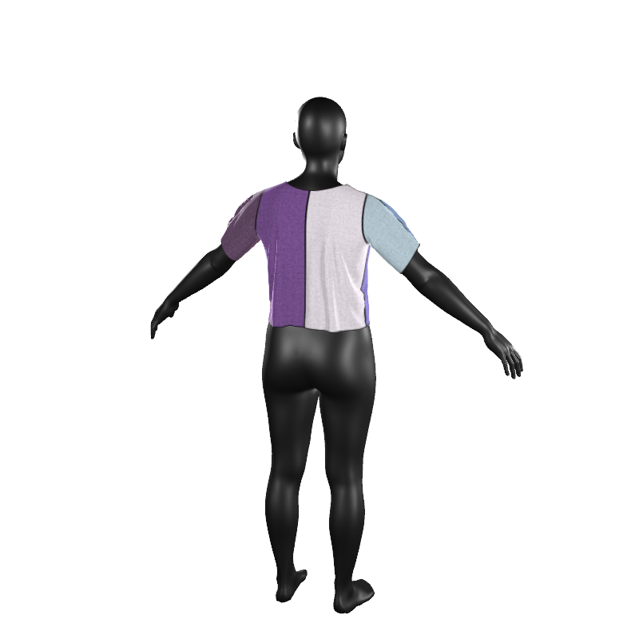
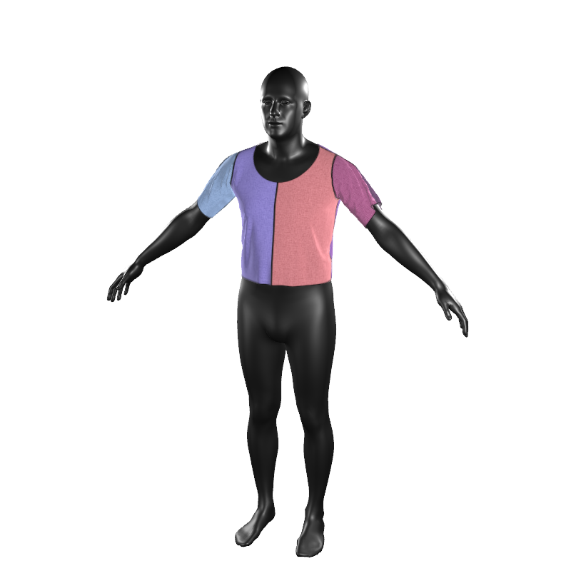
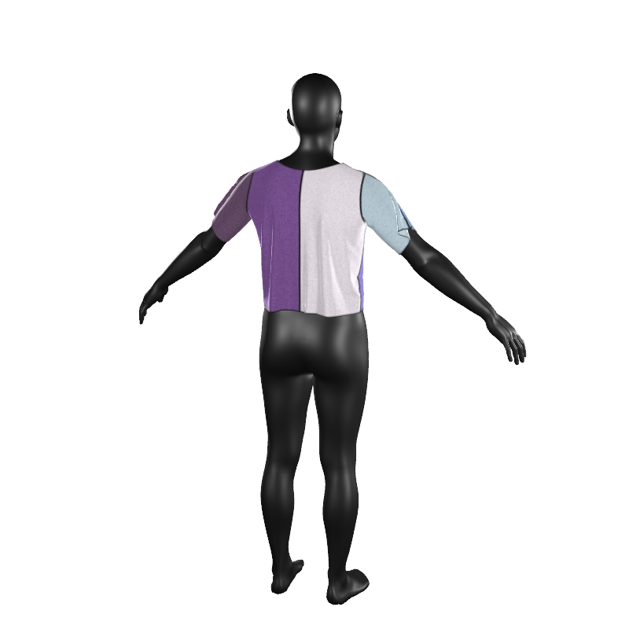
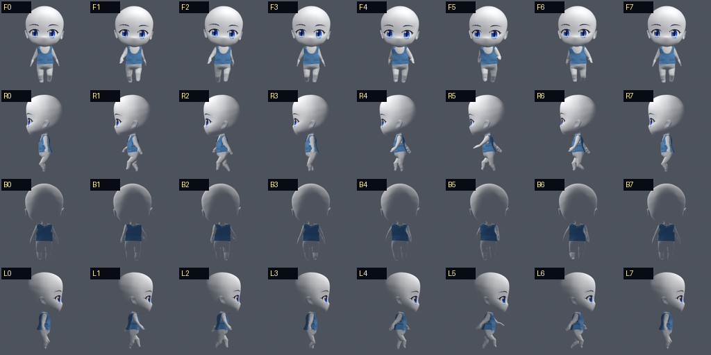
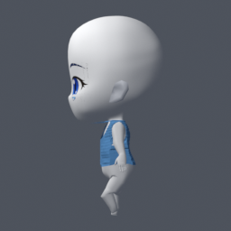
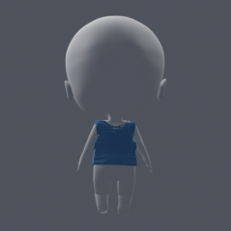
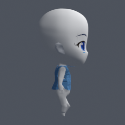

AssetsLab 服装审核 Gallery
页面只保留通过的里程碑结果和当前实验。普通失败尝试不会长期堆积；下一次实验会覆盖 current。
milestonescurrent experimentheadless BlenderTailscale
通过里程碑：GarmentCode neutral T-shirt
通过：官方 neutral body，Warp 模拟完成，无身体碰撞和自交。


通过里程碑：GarmentCode mean_male T-shirt
通过：官方 mean_male body，作为第二个物理基准保留。


当前实验：continuous depth transfer
当前：保持已通过的衣片物理结果，将 Actor 转移阶段的 5 cm 深度分箱改为连续插值。物理门禁通过：406 帧、身体碰撞 22、自交 0；背部条带已减弱但仍需审核。下一次实验将覆盖本目录。



